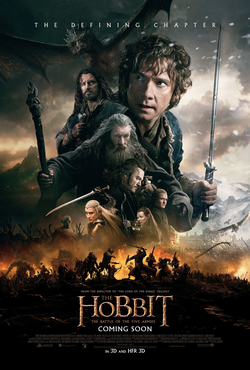
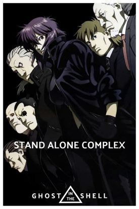
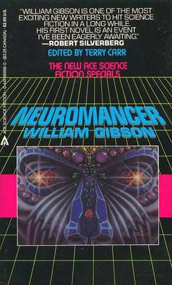

Gregory's Sci-Fi/Fantasy
Exploration | Works List
Gregory's Sci-Fi/Fantasy
Exploration | Works List 
 Wikipedia
WikipediaMusic by Ribhav Agrawal from Pixabay
Works I've Interacted With
This is the current comprehensive list of media works in Sci-Fi & Fantasy that I have viewed/read/played. It will continue to update whenever I include new additions to this list.
.jpg) Movie: "Dune - 1984, 2021, 2024", based on the book by Frank Herbert, filmed by David Lynch (1984), Denis Villeneuve (2021, 2024)
Movie: "Dune - 1984, 2021, 2024", based on the book by Frank Herbert, filmed by David Lynch (1984), Denis Villeneuve (2021, 2024) Movie: "The Hobbit: An Unexpected Journey - 2012", based on the book by J.R.R. Tolkien, filmed by Peter Jackson
Movie: "The Hobbit: An Unexpected Journey - 2012", based on the book by J.R.R. Tolkien, filmed by Peter Jackson Movie: "The Hobbit: The Desolation of Smaug - 2013", based on the book by J.R.R. Tolkien, filmed by Peter Jackson
Movie: "The Hobbit: The Desolation of Smaug - 2013", based on the book by J.R.R. Tolkien, filmed by Peter Jackson- Movie: "The Hobbit: The Battle of the Five Armies - 2014", based on the book by J.R.R. Tolkien, filmed by Peter Jackson
 Movie: "The Lord of the Rings: The Fellowship of the Ring - 2001", based on the book by J.R.R. Tolkien, filmed by Peter Jackson
Movie: "The Lord of the Rings: The Fellowship of the Ring - 2001", based on the book by J.R.R. Tolkien, filmed by Peter Jackson Movie: "The Lord of the Rings: The Two Towers - 2002", based on the book by J.R.R. Tolkien, filmed by Peter Jackson
Movie: "The Lord of the Rings: The Two Towers - 2002", based on the book by J.R.R. Tolkien, filmed by Peter Jackson Movie: "The Lord of the Rings: The Return of the King - 2003", based on the book by J.R.R. Tolkien, filmed by Peter Jackson
Movie: "The Lord of the Rings: The Return of the King - 2003", based on the book by J.R.R. Tolkien, filmed by Peter Jackson- TV Show: "Ghost in the Shell: Stand Alone Complex - 2002; 2nd GIG - 2004; Solid State Society - 2006"
.jpg) Video Game: "Halo: Combat Evolved - 2001"
Video Game: "Halo: Combat Evolved - 2001" Video Game: "World of Warcraft - 2004; Expansions: The Burning Crusade - 2007; Wrath of the Lich King - 2008; Cataclysm - 2010; Mists of Pandaria - 2012; Warlords of Draenor - 2014; Legion - 2016; Battle for Azeroth - 2018; Shadowlands - 2020"
Video Game: "World of Warcraft - 2004; Expansions: The Burning Crusade - 2007; Wrath of the Lich King - 2008; Cataclysm - 2010; Mists of Pandaria - 2012; Warlords of Draenor - 2014; Legion - 2016; Battle for Azeroth - 2018; Shadowlands - 2020" Audiobook: "All Systems Red" by Martha Wells
Audiobook: "All Systems Red" by Martha Wells- Audiobook: "Firestarter - 2016" based on the book by Stephen King - 1980
 Audiobook: "Into the Labyrinth - 2018" by John Bierce
Audiobook: "Into the Labyrinth - 2018" by John Bierce
Last Update: 08/20/2025
"To Be Explored" Content
This section includes media works that I have yet to examine but are on my list of content that I would like to consume in the future.
- Book: "Neuromancer" by William Gibson
Stay tuned for more reviews and insights into the fascinating worlds of science fiction and fantasy!